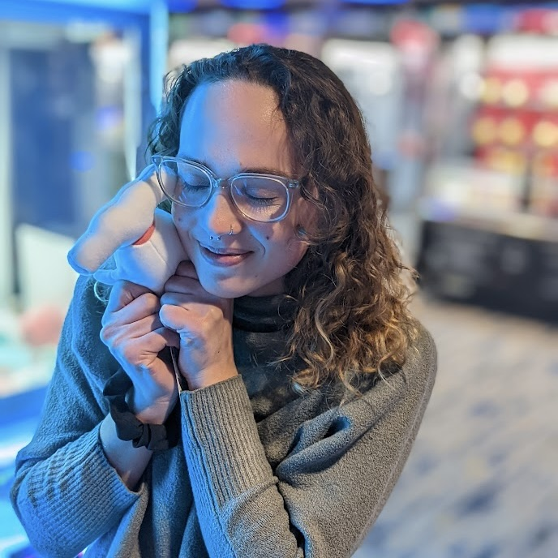

About me

I realized I loved creating websites during college while obtaining my B.A. in Environmental Studies, and committed to learning the fundamentals of web design & development in 2020. With a background in environmental studies and sustainable development, I look for projects that have a positive social or environmental mission.
I use HTML and CSS, website building platforms, and CMS's including Drupal to create accessible and engaging websites. I have produced and coordinated multiple web launches. I implement SEO and web accessibility, help plan content strategy, and implement best practice solutions for each web project.
Interested in working with me? Get in touch.